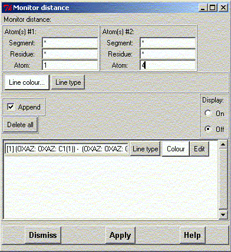
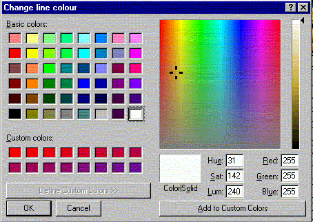
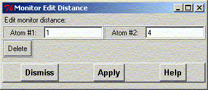

**************************************************************************
Monitor Distance Widget
Leif Laaksonen CSC 2001
**************************************************************************
Select the atom in set #1 and #2 to define a distance, choose a line colour and click the apply button.
To display the selected distance put the display state to "On"
Press the "Delete all" button to delete all selected line segments

Choose the line colour from the colour menu.

To edit any of the defined sets press the "Edit" button. Now you can redefine the selected atoms or delete this particular defined distance.

Line command: see monitor command
**************************************************************************
LUL/2001
**************************************************************************